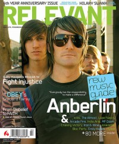
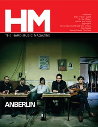

Anberlin
|  |
| March 2007 Relevant |
 |
| September 2008 HM |
Media coverage:
- May 2003 in HM "Hardnews: Not Just SaGoh 24/7 Members...", by Christopher Rose
- Sep 2003 in 7ball "Ask The Band: Anberlin"
- Oct 2004 in CCM "Insider: Anberlin"
- Jan 2005 in HM "Anberlin's Love Song", by Brian Quincy Newcomb
- Mar 2007 in HM "We The Wanderers", by Stephen Christian
- Mar 2007 in Relevant "The Evolution", by Adam Smith
- Apr 2007 in CCM "Bright Lights, Big Cities", by Brian Quincy Newcomb
- Oct 2007 in CCM "What Now!: ...Anberlin? Not So Much"
- Sep 2008 in HM "Surprise... Rock Is not Easy", by Matt Conner
- Nov 2008 in Group "The Rip Out: Ministry and Media: Anberlin", by Scott Firestone IV
- Sep 2010 in HM "Anberlin", by Jeff Sistrunk
- Nov 2012 in HM "Born Into This", by David Huff
- 1 Feb 2014 in CCM Digital "What's New: Anberlin Bids Adieu", by Matt Conner
- Apr 2014 in HM "The Jump: Columns: Boys speak in rhythm, girls in code", by Justin Mabee
- Jun 2014 in HM "The End of an Era", by Melissa Sanchez
- 1 Aug 2014 in CCM Digital "Going Out on Top", by Matt Conner
- Dec 2014 in HM "The Final Interview", by Jameson Ketchum
- Jan 2015 in HM "From the HM Vault: Anberlin in "
Albums & reviews:
2003: Blueprints for the Black Market
2007: Cities
2010: Dark Is The Way, Light Is A Place
- Jun 2003 in CCM, by Brian Quincy Newcomb
- Jul 2003 in HM, by Aaron Wreckinthangs, Doug Van Pelt
- Sep 2003 in YouthWorker, by Dave Urbanski
- Mar 2005 in Relevant, by Tyler L. Clark
- Apr 2005 in CCM, by Lou Carlozo
- May 2005 in Worship Leader
- May 2005 in HM, by Jamie Lee Rake
- 14 Jun 2005 in Christian Century, by Lou Carlozo
- Jul 2005 in YouthWorker, by Dave Urbanski
2007: Cities
- Mar 2007 in HM, by Andrew Schwab
- Mar 2007 in YouthWorker
- Mar 2007 in CCM, by Andrew Scates
- May 2007 in Relevant, by Adam Flowers
- 2007 in Christian Rock Report, by Matt Fisher
- Jan 2008 in CCM, by Jonathan Issac Harms
- Mar 2008 in YouthWorker, by Jonathan Issac Harms
- Sep 2008 in HM, by Adam P Newton
- Sep 2008 in Relevant
- Apr 2009 in Living With Teenagers, by Randy Williams
2010: Dark Is The Way, Light Is A Place
- Sep 2010 in HM, by Doug Van Pelt
- Nov 2012 in HM, by Doug Van Pelt
- Dec 2012 in CCM Digital, by Andy Argyrakis
- 15 Jan 2014 in CCM Digital, by Andy Argyrakis
- Jun 2014 in HM, by Chelc Eaves
- 1 Aug 2014 in CCM Digital, by Matt Conner
- 1 Sep 2014 in CCM Digital, by Andy Argyrakis
- 1 Jul 2015 in CCM Digital, by Andy Argyrakis
Award Summary (Nominations / Wins)
Dove Awards- Rock Album: Lowborn
- Rock/Contemporary Album: Cities, Live In New York City

© 2011 CMnexus. Last updated December 2020. Contact: editor -AT- cmnexus -DØT- org About